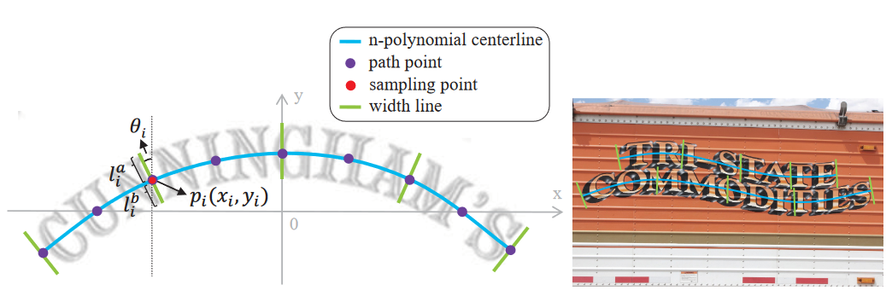
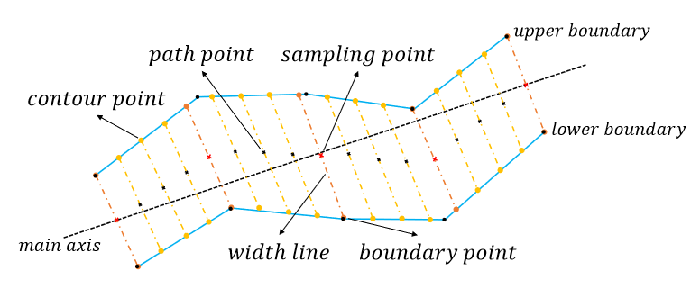
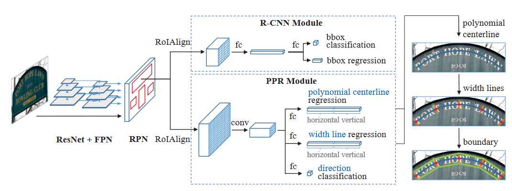

前言
又看了一篇 Text Detection 的论文，然后看了看师兄发的论文，emmm 感觉收获很一般？
我决定总结一下看的一些论文，然后制定下学习计划？
论文
Accurate arbitrary-shaped scene text detection via iterative polynomial parameter regression
全文
内容
发表于 C 类会议 Asian Conference on Computer Vision，基于迭代多项式参数回归的任意形状场景文本精确检测。
提出了一个新模型：PolyPRNet，设计了一个独特的文本形状参数的迭代回归模块。

这个形状模型包含：
- 采样点
- 采样点距离上边界的距离
- 采样点距离下边界的距离
这个曲线用一个多项式来表示：， 为中心线上点的坐标。

生成的标签。

整个网络的结构
- 通过 ResNet+FPN 作为骨干（ResNet50）。
- RPN 生成文本区域建议。
- 带有边界框回归分支和分类分支的 R-CNN，级联 R-CNN
- 生成的 RoIAlign 进入 R-CNN 模块 和 PPR 模块
在对比各种方法：SegLink、EAST、CTD+TLOC、TextSnake…等等，认定这个方法还是好使的。
Long-Distance Person Detection Based on YOLOv7
全文
导师说这个期刊有点水，有点危险，想让师兄发更好的……但是我和同门看了感觉好牛逼。
然后顺藤摸瓜找到了SCI检索中导师账号网址，还有大实验室各个导师账号的网址……就爬到了师兄师姐发的小论文，有空看看。
- 导师：Fang Yang (sciprofiles.com)
- 史老：qingxuan shi (sciprofiles.com)
- 老田：Xuedong Tian (sciprofiles.com)
- 蝈蝈：Wenjie Luo (sciprofiles.com)
- 李老的不让看，差评！Hidden Profile (sciprofiles.com)
内容
由于是基于 YOLOv7 的小目标检测，而我对 YOLOv7 一窍不通，只能随便看看了。
师兄说 YOLOv7 对小目标检测不太好使，我对他进行重构，利用递归门卷积模块实现与高阶空间的交互，引入协调注意力机制，增强行人目标信息，弱化背景信息，一波操作后我的新模型比他好使。
只使用数据集 TinyPerson。
使用了数据增强方法：
- Mixup
- Mosica
两个数据增强方法都是将两个训练样本及标签按一定比例融合。
对于目标检测，分为：
- 锚点
- 单阶段：YOLO 各种系列、SSD、RetinaNet
- 两阶段：在特征图的每个点生成不同大小和比例的锚点，然后通过区域建议网络（RPN）进行过滤
- Mask R-CNN
- Fast R-CNN
- Cascade R-CNN
- 无锚点
然后就是一堆数学公式，不知道是虚张声势还是确实牛逼？师兄用的实验环境：
- Pytorch 1.10.0
- Intel ® Xeon ® Platinum 8255C CPU@2.50GHz
- NVIDIA RTX 3090 GPU
牛逼牛逼！
学习计划
-
本来想看师兄的场景文本编辑方面的，查看完目录发现文字风格迁移的论文是真的少……但是场景文本识别的还有一些，接下来应该要看一些文字风格迁移的论文？但这类的论文真的很少哇！
-
看了一些场景文字识别的论文感觉几篇有那么点共性，考虑看点综述：Text Recognition in the Wild: A Survey | Papers With Code、 [1811.04256] Scene Text Detection and Recognition: The Deep Learning Era (arxiv.org)
-
学学小土堆的 Pytorch，同乡推荐的：PyTorch深度学习快速入门教程（绝对通俗易懂！）【小土堆】_哔哩哔哩_bilibili
-
不知道实验室的服务器能不能整啊，用自己电脑跑这玩意太伤了。
-
好像该准备准备六级了orz
爬目录上瘾了，又爬了 International Journal of Computer Vision 和 Computer Vision and Pattern Recognition (CVPR) 的论文，收集了一些可能跟研究方向有关的论文：
International Journal of Computer Vision：
| 序号 | 名称 | 资源 | ID | 概要 |
|---|---|---|---|---|
| 1 | Scene text detection and recognition: The deep learning era | [1811.04256] Scene Text Detection and Recognition: The Deep Learning Era (arxiv.org) | arXiv:1811.04256 | 本次调查旨在总结和分析深度学习时代场景文本检测和识别的主要变化和重大进展。 |
| 2 | I3CL: Intra- and inter-instance collaborative learning for arbitrary-shaped scene text detection | [2108.01343] I3CL:Intra- and Inter-Instance Collaborative Learning for Arbitrary-shaped Scene Text Detection (arxiv.org) | arXiv:2108.01343 | 提出了一种新的方法，称为实例内和实例间协作学习（I3CL），用于场景文本检测 |
| 3 | PageNet: Towards end-to-end weakly supervised page-level handwritten chinese text recognition | [2207.14807] PageNet: Towards End-to-End Weakly Supervised Page-Level Handwritten Chinese Text Recognition (arxiv.org) | arXiv:2207.14807 | 手写中文文本检测 |
Computer Vision and Pattern Recognition (CVPR)：
| 序号 | 名称 | 资源 | ID | 概要 |
|---|---|---|---|---|
| 1 | CLEval: Character-level evaluation for text detection and recognition tasks | [2006.06244] CLEval: Character-Level Evaluation for Text Detection and Recognition Tasks (arxiv.org) | arXiv:2006.06244 | 提出了一个新的文本检测评估方法 |
| 2 | Font-ProtoNet: Prototypical network based font identification of document images in low data regime | https://ieeexplore.ieee.org/document/9150768 Font-ProtoNet: Prototypical Network-Based Font Identification of Document Images in Low Data Regime (thecvf.com) |
DOI:10.1109/CVPRW50498.2020.00286 | 少量镜头学习技术，如原型网络，在扫描/打印的文档图像中使用来自不同字体的字符图像作为稀缺数据场景的输入进行字体识别，并将所提出的方法称为 Font-ProtoNet |
| 3 | Illegible text to readable text: An image-to-image transformation using conditional sliced wasserstein adversarial networks | [1910.05425] Illegible Text to Readable Text: An Image-to-Image Transformation using Conditional Sliced Wasserstein Adversarial Networks (arxiv.org) | arXiv:1910.05425 | 们通过开发手写到机器打印条件生成对抗性网络**（HW2MP-GAN）模型来解决这个问题，该模型将手写识别公式化为文本图像到文本图像**的翻译问题，其中给定的图像（通常是难以辨认的形式）被转换为另一个图像，接近其机器打印形式。所提出的模型由三个组件组成，包括生成器、单词级和字符级鉴别器。 |
| 4 | On recognizing texts of arbitrary shapes with 2D self-attention | [1910.04396] On Recognizing Texts of Arbitrary Shapes with 2D Self-Attention (arxiv.org) | arXiv:1910.04396 | 介绍了一种新的识别任意形状文本的体系结构，称为自注意文本识别网络（SATRN），其灵感来自Transformer。SATRN利用自注意机制来描述场景文本图像中字符的二维（2D）空间相关性。SATRN利用自注意的全图传播，可以识别任意排列和大字符间距的文本。 |
| 5 | An accurate segmentation-based scene text detector with context attention and repulsive text border | CVPR 2020 Open Access Repository (thecvf.com) | DOI:10.1109/CVPRW50498.2020.00283 | 对于场景文本检测，提出了一种基于精确分割的检测器，该检测器配备了上下文注意和排斥文本边界。 |
| 6 | Visual parsing with query-driven global graph attention (QD-GGA): Preliminary results for handwritten math formula recognition | Visual Parsing With Query-Driven Global Graph Attention (QD-GGA): Preliminary Results for Handwritten Math Formula Recognition (thecvf.com) | DOI:10.1109/CVPRW50498.2020.00293 | 基于进化神经网络的手写数学公式可视化解析方法。 |
| 7 | A method for detecting text of arbitrary shapes in natural scenes that improves text spotting | [1911.07046] A method for detecting text of arbitrary shapes in natural scenes that improves text spotting (arxiv.org) | arXiv:1911.07046 | 介绍了一种基于流水线的文本识别框架，该框架可以检测和识别具有复杂背景的自然场景图像中各种字体、形状和方向的文本。我们工作的主要贡献是文本检测组件，我们称之为UHT，是UNet、Heatmap和Textfill的缩写。 |
| 8 | ScrabbleGAN: Semi-supervised varying length handwritten text generation | [2003.10557] ScrabbleGAN: Semi-Supervised Varying Length Handwritten Text Generation (arxiv.org) | arXiv:2003.10557 | 提出了ScrabbleGAN，这是一种半监督的合成手写文本图像的方法，在风格和词汇上都是通用的。ScrabbleGAN依赖于一种新的生成模型，该模型可以生成任意长度的单词图像。 |
| 9 | SCATTER: Selective context attentional scene text recognizer | [2003.11288] SCATTER: Selective Context Attentional Scene Text Recognizer (arxiv.org) | arXiv:2003.11288 | 场景文本识别（STR）是在复杂图像背景下识别文本的任务，是一个活跃的研究领域。目前最先进的（SOTA）方法仍然难以识别以任意形状书写的文本。在本文中，我们介绍了一种新的STR架构，称为选择性上下文注意力文本识别器（SCATTER）。 |
| 10 | Diverse image generation via self-conditioned GANs | [2006.10728] Diverse Image Generation via Self-Conditioned GANs (arxiv.org) | arXiv:2006.10728 | 一种简单但有效的无监督方法，用于生成逼真且多样化的图像。我们在不使用手动注释的类标签的情况下训练类条件GAN模型。 |
| 11 | ABCNet: Real-time scene text spotting with adaptive bezier-curve network | [2002.10200] ABCNet: Real-time Scene Text Spotting with Adaptive Bezier-Curve Network (arxiv.org) | arXiv:2002.10200 | 通过提出自适应贝塞尔曲线网络（ABCNet）来解决场景文本识别问题。 |
| 12 | STEFANN: Scene text editor using font adaptive neural network | [1903.01192] STEFANN: Scene Text Editor using Font Adaptive Neural Network (arxiv.org) | arXiv:1903.01192 | 捕获场景中的文本信息在场景解释和决策中起着重要作用。尽管有一些方法可以成功地检测和解释场景中存在的复杂文本区域，但据我们所知，目前还没有旨在修改图像中文本信息的重要工作。直接在图像上编辑文本的能力具有几个优点，包括纠错、文本恢复和图像可重用性。在本文中，我们提出了一种在字符级别修改图像中文本的方法。 |
| 13 | Semantic pyramid for image generation | [2003.06221] Semantic Pyramid for Image Generation (arxiv.org) | arXiv:2003.06221 | 我们提出了一种新的基于GAN的模型，该模型利用了通过预训练的分类模型学习的深度特征空间 |
| 14 | RSCA: Real-time segmentation-based context-aware scene text detection | [2105.12789] RSCA: Real-time Segmentation-based Context-Aware Scene Text Detection (arxiv.org) | arXiv:2105.12789 | RSCA：一种用于任意形状场景文本检测的基于实时分割的上下文感知模型 |
| 15 | Transformer-based text detection in the wild | [Transformer-Based Text Detection in the Wild (thecvf.com)](https://openaccess.thecvf.com/content/CVPR2021W/VOCVALC/papers/Raisi_Transformer-Based_Text_Detection_in_the_Wild_CVPRW_2021_paper.pdf#:~:text=In this work%2C we tackle the problem of,to the rotated text detection problem that leverages) | DOI:10.1109/CVPRW53098.2021.00353 | 提出了一种基于Transformer的架构，该架构天生能够处理图像中的多方向文本 |
| 16 | Sequence-to-sequence contrastive learning for text recognition | [2012.10873] Sequence-to-Sequence Contrastive Learning for Text Recognition (arxiv.org) | arXiv:2012.10873 | 标准手写文本识别基准 |
| 17 | MetaHTR: Towards writer-adaptive handwritten text recognition | [2104.01876] MetaHTR: Towards Writer-Adaptive Handwritten Text Recognition (arxiv.org) | arXiv:2104.01876 | 元学习框架，多种风格的手写文字识别 |
| 18 | Adaptive convolutions for structure-aware style transfer | https://paperswithcode.com/paper/adaptive-convolutions-for-structure-aware CGL @ ETHZ - Adaptive Convolutions for Structure-Aware Style Transfer |
DOI:10.1109/CVPR46437.2021.00788 | 风格图像中的局部几何结构在传输过程中经常被忽略。我们提出了自适应卷积（AdaConv），这是AdaIN的一个通用扩展，允许实时同时传输统计和结构风格。 |
| 19 | Deep texture recognition via exploiting cross-layer statistical self-similarity | https://ieeexplore.ieee.org/document/9577662 | DOI:10.1109/CVPR46437.2021.00519 | 开发了CLASSNet，这是一种有效的纹理识别深度模型 |
| 20 | Scene text telescope: Text-focused scene image super-resolution | [2005.03341] Scene Text Image Super-Resolution in the Wild (arxiv.org) | arXiv:2005.03341 | 真实场景的文本SR数据集，称为TextZoom。它包含成对的真实低分辨率和高分辨率图像，这些图像由野外不同焦距的相机拍摄 |
| 21 | Read like humans: Autonomous, bidirectional and iterative language modeling for scene text recognition | [2103.06495] Read Like Humans: Autonomous, Bidirectional and Iterative Language Modeling for Scene Text Recognition (arxiv.org) | arXiv:2103.06495 | 语言知识应用于场景文本识别的有效方法——ABINet |
| 22 | Semantic-aware video text detection | https://ieeexplore.ieee.org/document/9578447 | DOI:10.1109/CVPR46437.2021.00174 | 提出了一种基于语义特征跟踪文本的端到端可训练视频文本检测器 |
| 23 | MOST: A multi-oriented scene text detector with localization refinement | [2104.01070] MOST: A Multi-Oriented Scene Text Detector with Localization Refinement (arxiv.org) | arXiv:2104.01070 | 一种新的场景文本检测算法，该算法提出了一套策略来显著提高文本定位的质量 |
| 24 | Rethinking style transfer: From pixels to parameterized brushstrokes | [2103.17185] Rethinking Style Transfer: From Pixels to Parameterized Brushstrokes (arxiv.org) | arXiv:2103.17185 | 风格化过程仅限于像素域。然而，我们认为这种表现是不自然的，因为绘画通常由笔触而不是像素组成。我们提出了一种通过优化参数化笔触而不是像素来风格化图像的方法，并进一步引入了一种简单的可微分绘制机制。 |
| 25 | On feature normalization and data augmentation | [2002.11102] On Feature Normalization and Data Augmentation (arxiv.org) | arXiv:2002.11102 | 提出了矩交换，这是一种隐式数据增强方法，鼓励模型也将矩信息用于识别模型 |
| 26 | Learning to warp for style transfer | https://ieeexplore.ieee.org/document/9577906 | DOI:10.1109/CVPR46437.2021.00370 | 提出了一种神经网络，该网络独特地学习从特征间距离的4D阵列到非参数2D扭曲场的映射。 |
| 27 | Dictionary-guided scene text recognition | https://ieeexplore.ieee.org/document/9577624 | DOI:10.1109/CVPR46437.2021.00730 | 我们提出了一种新的方法，将字典纳入场景文本识别系统的训练和推理阶段。我们使用字典生成一个可能结果的列表，并找到最符合文本视觉外观的结果。 贡献了VinText，这是一个具有挑战性的越南语场景文本数据集，其中一些字符由于重音符号而在视觉形式上模棱两可。该数据集将成为衡量场景文本检测和识别算法的适用性和稳健性的一个具有挑战性的基准。 |
| 28 | HyperStyle: StyleGAN inversion with HyperNetworks for real image editing | [2111.15666] HyperStyle: StyleGAN Inversion with HyperNetworks for Real Image Editing (arxiv.org) | arXiv:2111.15666 | 将真实图像反演到StyleGAN的潜在空间。提出了HyperStyle，这是一种超网络，它学习调制StyleGAN的权重，以在潜在空间的可编辑区域中忠实地表达给定的图像。 |
| 29 | AUV-Net: Learning aligned UV maps for texture transfer and synthesis | [2204.03105] AUV-Net: Learning Aligned UV Maps for Texture Transfer and Synthesis (arxiv.org) | arXiv:2204.03105 | AUV-Net，它通过将不同3D形状的对应语义部分映射到UV空间中的相同位置，学习将3D表面嵌入到2D对齐的UV空间中。 |
| 30 | PCA-Based knowledge distillation towards lightweight and content-style balanced photorealistic style transfer models | [2203.13452] PCA-Based Knowledge Distillation Towards Lightweight and Content-Style Balanced Photorealistic Style Transfer Models (arxiv.org) | arXiv:2203.13452 | 我们引入了基于主成分分析的知识提取来提取轻量级模型，并表明它是受理论驱动的。据我们所知，这是第一种用于真实感风格转换的知识提取方法。 |
| 31 | StyTr(²): Image style transfer with transformers | [2105.14576] StyTr: Image Style Transfer with Transformers (arxiv.org) | arXiv:2105.14576 | 提出了一种称为StyTr2的基于变换器的方法，将输入图像的长程依赖性考虑到图像风格转移。与其他视觉任务的视觉转换器不同，StyTr2包含两个不同的转换器编码器，分别为内容和风格生成特定于领域的序列。在编码器之后，采用多层转换器解码器根据样式序列对内容序列进行样式化。 |
| 32 | SwinTextSpotter: Scene text spotting via better synergy between text detection and text recognition | [2203.10209] SwinTextSpotter: Scene Text Spotting via Better Synergy between Text Detection and Text Recognition (arxiv.org) | arXiv:2203.10209 | SwinTextSpotter。使用具有动态头的转换器编码器作为检测器，我们用一种新的识别转换机制将这两项任务统一起来，以明确地通过识别损失来指导文本定位。直接的设计产生了一个简洁的框架，既不需要额外的校正模块，也不需要对任意形状的文本进行字符级注释。 |
| 33 | Revisiting document image dewarping by grid regularization | [2203.16850] Revisiting Document Image Dewarping by Grid Regularization (arxiv.org) | arXiv:2203.16850 | 本文解决了文档图像去水印问题，旨在消除文档图像中的几何失真，实现文档数字化。 |
| 34 | A style-aware discriminator for controllable image translation | [2203.15375] A Style-aware Discriminator for Controllable Image Translation (arxiv.org) | arXiv:2203.15375 | 提出了一种风格感知鉴别器，它既可以作为评论家，也可以作为风格编码器来提供条件。 |
| 35 | Look closer to supervise better: One-shot font generation via component-based discriminator | [2205.00146] Look Closer to Supervise Better: One-Shot Font Generation via Component-Based Discriminator (arxiv.org) | arXiv:2205.00146 | 由于大量具有复杂结构的字符，自动字体生成仍然是一个具有挑战性的研究问题。通常，只有少数样本可以作为风格/内容参考（称为少数镜头学习），这进一步增加了保存局部风格模式或详细字形结构的难度。我们调查了先前研究的缺点，发现粗粒度鉴别器不足以监督字体生成器。为此，我们提出了一种新的组件感知模块（CAM），它监督生成器在更细粒度的级别（即组件级别）解耦内容和样式。 |
| 36 | Beyond a pre-trained object detector: Cross-modal textual and visual context for image captioning | [2205.04363] Beyond a Pre-Trained Object Detector: Cross-Modal Textual and Visual Context for Image Captioning (arxiv.org) | arXiv:2205.04363 | 建议（并证明这一点很重要）使用**多模态预训练模型（CLIP）**来检索此类上下文描述 |
| 37 | Wearable ImageNet: Synthesizing tileable textures via dataset distillation | https://ieeexplore.ieee.org/document/9857092 | DOI:10.1109/CVPRW56347.2022.00252 | 描述了一种简单的方法，通过从合成像素的环形画布中采样随机作物来生成可平铺的提取纹理，同时强制所有这些作物都作为有效的提取训练数据。 |